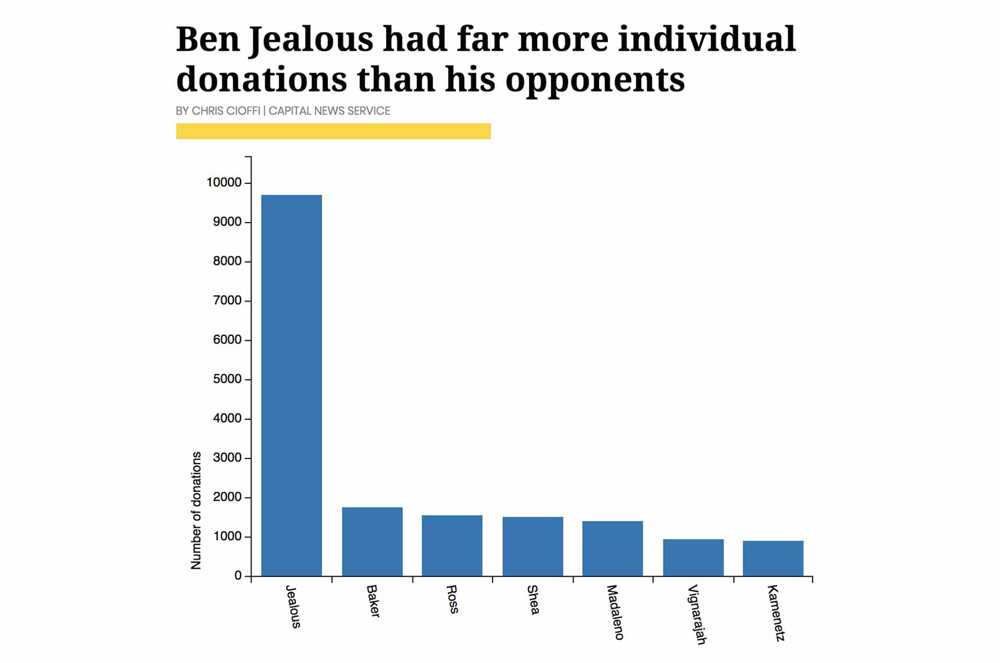
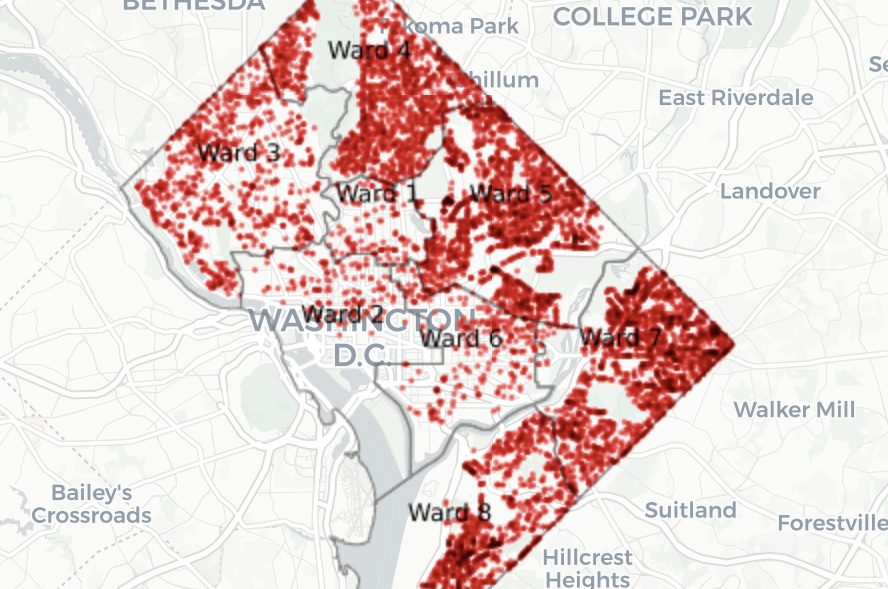
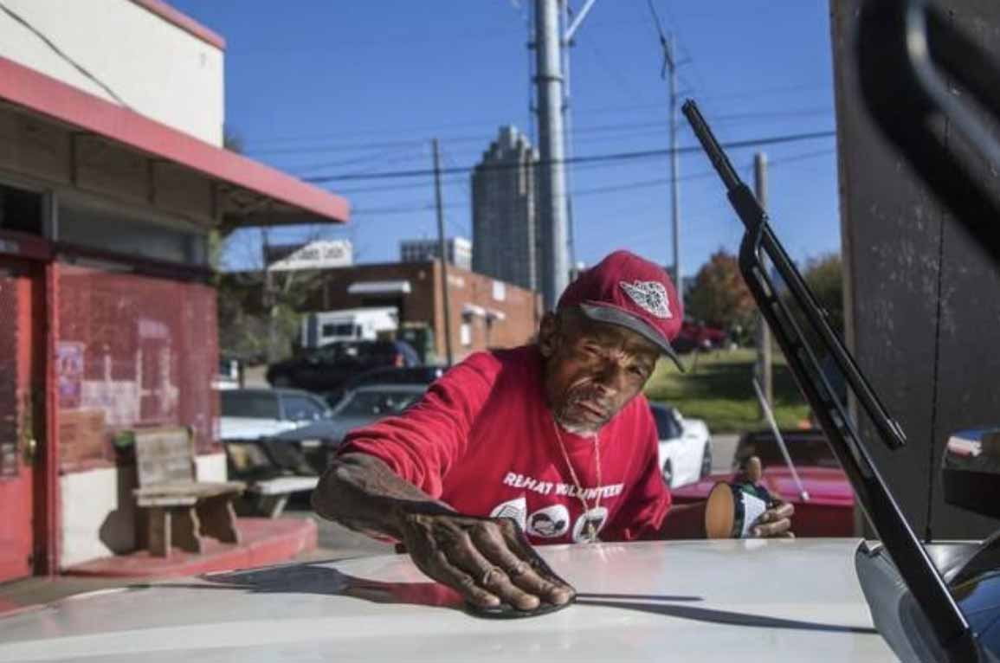
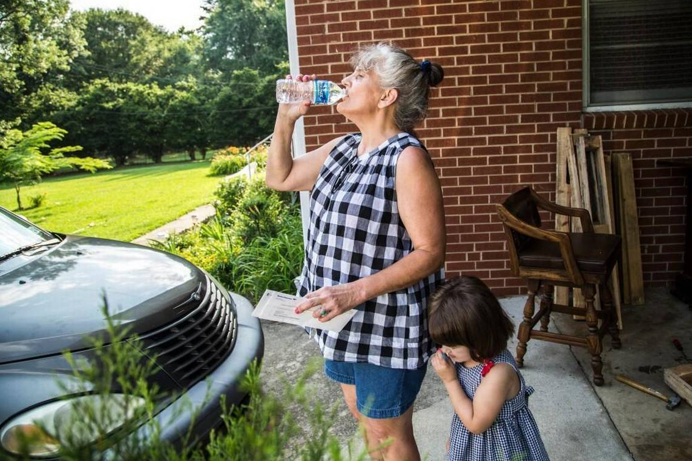
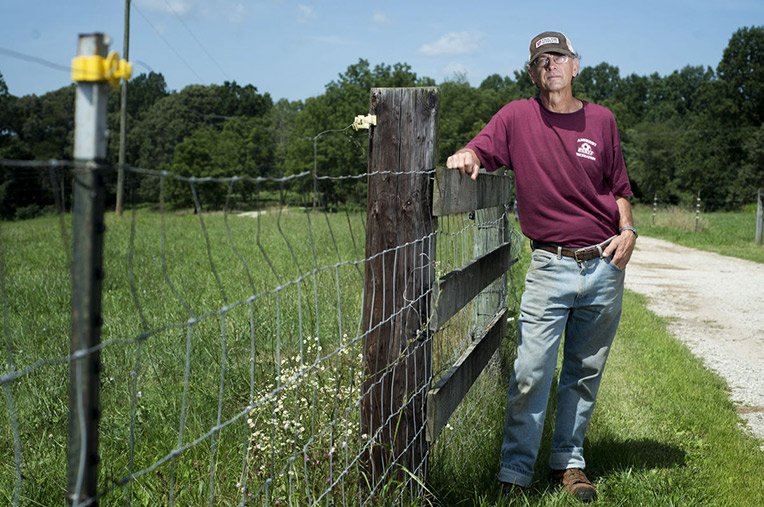
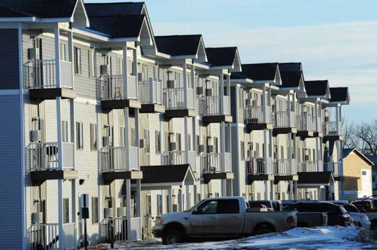

My Work

We ran the numbers: Here’s how Democrats running for governor have been raising moneyAn analysis of how Maryland Democrats raised money before the spring primary.
My take: I cleaned and analyzed candidate campaign contributions using the programming language R. The story is a summary of my findings and includes graphics built with C3.

DC Is Planting Thousands of Trees, But Inequity RemainsHistorically D.C. provided more maintenance to affluent parts of the city, but that's slowly changing.
My take: I analyzed the D.C. Tree Inventory with R to see where D.C. trees are planted. Then, I mocked up graphics of my findings and worked with the NBC graphics team to build visuals using Carto and DataWrapper.
My take: I analyzed the D.C. Tree Inventory with R to see where D.C. trees are planted. Then, I mocked up graphics of my findings and worked with the NBC graphics team to build visuals using Carto and DataWrapper.

Downtown Raleigh neighborhood on brink of big changes Redevelopment projects near Raleigh’s thriving downtown mean dollar signs for some, but the loss of a livelihood for others.
My take: Part of my job at the N&O was to monitor development activity. I noticed the trend of new area projects and found owners through property records. I then walked the neighborhood to meet its people.
My take: Part of my job at the N&O was to monitor development activity. I noticed the trend of new area projects and found owners through property records. I then walked the neighborhood to meet its people.
 2 years and counting: Crane marks spot of project in limbo An investigation into why a 7-story apartment building never got built. My take: After driving by the crane many times, I finally decided to figure out why it hardly moved. Doing that required me to untangle a web of court documents, file an information request and interview neighbors.
2 years and counting: Crane marks spot of project in limbo An investigation into why a 7-story apartment building never got built. My take: After driving by the crane many times, I finally decided to figure out why it hardly moved. Doing that required me to untangle a web of court documents, file an information request and interview neighbors.

Their water is contaminated, and Wake residents want help The story looks at water contamination in a Wake neighborhood surrounded by city, but without municipal services.
My take: The push by citizens first popped up in county commission meetings. I was able to research area history of in both city and N&O archives. I examined county and EPA documents, and I spent time meeting residents.
My take: The push by citizens first popped up in county commission meetings. I was able to research area history of in both city and N&O archives. I examined county and EPA documents, and I spent time meeting residents.

Local Farmers help meet Chesapeake Bay runoff regulations A look at how farmers are adapting to Environmental Protection Agency regulations.
My take: I met several Bedford County farmers working to adhere to rules restructing runoff to the Chesapeake Bay. To put a breaking news story in perspective for readers, I put this story together just three days after the ruling.
My take: I met several Bedford County farmers working to adhere to rules restructing runoff to the Chesapeake Bay. To put a breaking news story in perspective for readers, I put this story together just three days after the ruling.

Senior Citizens in the oil patch can't afford rent Some senior citizens living in the oil-boom town of Sidney were paying more in rent than people in New York City.
My take: While reporting on other stories, I met people commuting several hours for work in the oil patch because they couldn't find housing. I used U.S. Census data and interviews to tell readers about the area's high rents.
My take: While reporting on other stories, I met people commuting several hours for work in the oil patch because they couldn't find housing. I used U.S. Census data and interviews to tell readers about the area's high rents.
About half of Maryland's children on Medicaid don't get annual exams
A look at how, and if, Maryland children get adaquate access to dental care.
My take: I analyzed U.S. Census data, read State of Maryland reports and obtained a database. I built graphics using High Charts and mapped data in Carto. I took all the photographs and wrote the CSS and HTML for the page.
My take: I analyzed U.S. Census data, read State of Maryland reports and obtained a database. I built graphics using High Charts and mapped data in Carto. I took all the photographs and wrote the CSS and HTML for the page.
Skills
Education
-
Master's Multi-platform Journalism
2018
University of Maryland, College Park
-
Certificate Technology and Communication
2016
University of North Carolina, Chapel Hill, N.C.
-
B.A. English
2011
North Carolina State University, Raleigh, N.C
Experience
Digital Editor and Reporter
WTOP News, Washington, D.C. | May 2018-present
Develop and write original news articles. Edit and compile articles for publication on the website; Organize and manage content on WTOP.com; Communicate with readers via social media outlets.
Intern
NBC Washington, Washington, D.C. | June 2018 - August 2018
Conduct interviews and write news for NBCWashington.com and the NBC Washington app; Cut and upload videos from broadcasts, build online photo galleries and take photos; Provide support to the digital team.
Graduate Assistant
University of Maryland School of Public Health Dept. of Communication, College Park, Md. | July 2017-present
Work with communications department to write press releases and web stories, update website, collect photos and edit video.
General Assignment ‘Real Time’ Reporter
Raleigh News & Observer, Raleigh, NC. | Mar 2016-June 2017
Used social media and other tools to identify and quickly write stories across many newsroom beats for North Carolina's Pulitzer Prize-winning newspaper; Helped cover City of Raleigh and Wake County; Promoted from North Raleigh News reporter.
Cops and Courts Reporter
Lynchburg News & Advance, Lynchburg, Va. | May 2015 – March 2016
Monitored and covered criminal, civil and federal courts in five counties and in the City of Lynchburg; Identified and wrote stories about crime trends; Promoted from writing about and photographing Bedford County government and its people. Promoted from: Bedford County reporter.
General Assignment Reporter
Billings Gazette Communications, Billings, Mont. | Sept. 2013 - May 2015
Covered Montana State University in Billings, and helped metro reporters in city hall; Chased oil spills, cops, crashes, wildfires and covered trials, while writing features and taking photographs for Montana's largest newspaper.
Self Help Law Center Volunteer
AmeriCorps VISTA, Billings, Mont. | Jan. 2013 - Sept. 2013
Managed and expanded self-help kiosk program; Assisted pro se litigants with legal issues; Created and conducted surveys; Trained volunteers; Traveled across Mont. networking with clerks of court; Helped draft pro se forms; Wrote articles for a poverty blog.
Assistant Music Director and DJ
KUAC FM 89.9 & KSUA FM 91.5, Fairbanks, Alaska | April 2012 - Dec. 2012
Wrote and reviewed new music. Hosted a weekly music show on Fairbanks NPR affiliate and College Station (both located at University of Alaska, Fairbanks).
Youth Development Coordinator
AmeriCorps State National, Fairbanks, Alaska | Jan. 2012 - Dec. 2012
Awarded several thousand dollars in grants; Funded, designed and built a teaching garden; Created and operated bicycle co-op.
Freelance Reporter/Photographer
Raleigh, N.C./Washington D.C. | 2011-2012 & 2017
Write and take photographs for community news websites DCist (2017-present); Previously, Raleigh Public Record (2011-2012).
Production Intern
The Story with Dick Gordon, Chapel Hill, N.C. | Summer 2011
Performed general intern duties for nationally syndicated show, including: dubbing for shows, updating show archives, researching possible story ideas, locating interviewees, and pitching story ideas to producers.
News Intern
News Desk, WUNC, 91.5 FM, Durham, N.C.
Wrote copy for evening and morning newscasts; Gathered information and sound bites through interviews, research and observations; Assisted APM and NPR reporters to record interviews and upload tape-syncs.
Public Affairs Director
WKNC - 88.1, Raleigh, N.C. | Dec. 2010-Dec. 2011
Public Affairs Director, Dec. 2010-Dec. 2011, Assistant Promotions Director 2009-2010, Librarian 2008-2009. Coordinated all public affairs programming both online and on air; Planned events; Hosted weekly shows.